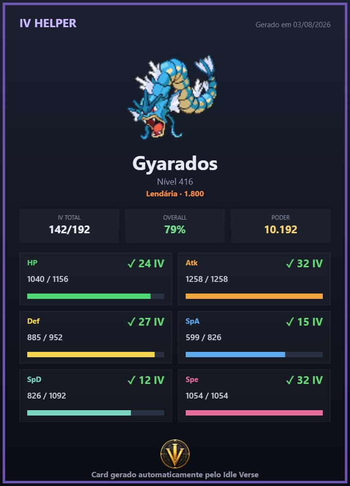
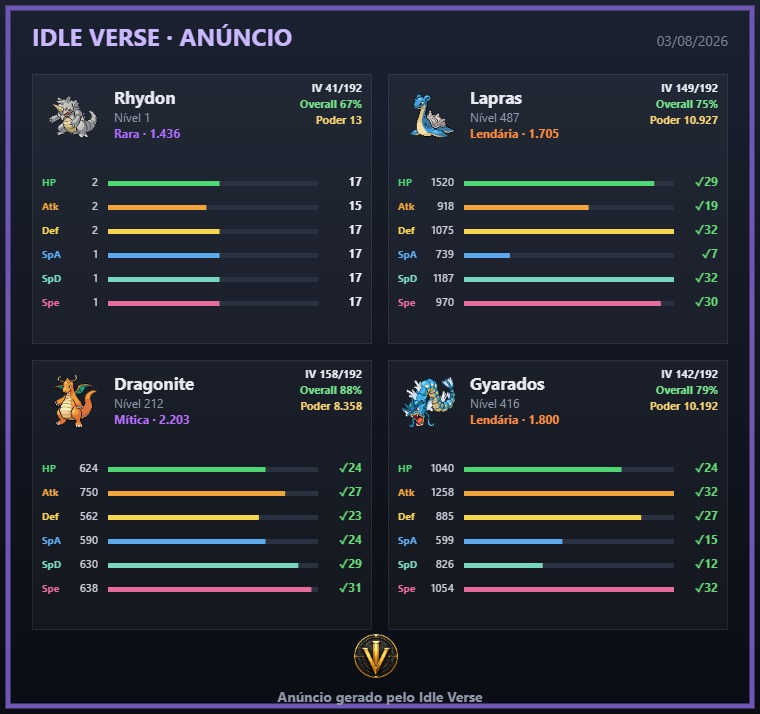

🧬
IV Helper
Veja IV, atributos, raridade, golpes, poder e overall sem abrir várias abas.
O Idle Verse coloca IV, golpes, capturas, mercado, PvP, Metas Pessoais e Rotas de Up no seu campo de visão — com até 4 contas lado a lado. É feito para jogar com mais informação, sem bot e sem automação.
Ferramentas visuais e organização de tela para você decidir melhor, dentro das regras do jogo.
7 dias grátis do plano Básico · sem cartão · depois R$ 9,90 vitalício · Windows


Veja IV, atributos, raridade, golpes, poder e overall sem abrir várias abas.
Crie metas de IV, Quality ou capturar shiny e veja em qual conta seu Pokémon bateu a meta.
Monte times, teste ideias e prepare estratégias para o PvP e os bosses.
Receba sugestões de hunt por Pokémon, nível, qualidade e tipo.
As ferramentas aparecem no fluxo do PokeIdle para você analisar melhor o que capturou, comprou, equipou ou pretende upar.
O log de capturas do PokeIdle fica mais útil para analisar suas hunts sem depender só da memória.
O PvP chegou ao PokeIdle: monte e teste seu time antes de ir pra batalha — e use a mesma análise pensando em bosses.
Ao analisar anúncios de Pokémon no mercado, o Idle Verse mostra informações úteis no IV Helper para avaliar melhor uma possível compra. O painel ganhou botões novos (Card e Criar Anúncio), então o vídeo abaixo está desatualizado.
No IV Helper, o botão "📋 Card" copia uma imagem pronta com os dados do Pokémon fixado — é só colar (Ctrl+V) onde quiser: chat, Discord, anúncio.

Exemplo do card geradoÉ essa imagem que vai pra área de transferência ao clicar em "📋 Card". Clique na imagem para ver em tamanho real.Compare atributos, IVs, qualidade e projeções para decidir qual Pokémon compensa manter, vender, upar ou usar no time.
O Idle Verse tem perfis para alta qualidade, desempenho e máxima estabilidade. Assim o jogador pode priorizar visual ou fluidez de acordo com o computador.
O card do IV Helper agora mostra toda a linha evolutiva do Pokémon selecionado, com sprite, nome e nível de cada estágio.
Encontre rápido o que falta na sua Pokédex filtrando por região e por estágio evolutivo.
O módulo de Rotas de Up recomenda alvos de hunt de acordo com o Pokémon escolhido, nível atual, qualidade, função e vantagem de tipo.
Crie metas por espécie (IV mínimo, Quality mínima ou os dois juntos) ou uma meta de "capturar um shiny, qualquer espécie", e acompanhe o progresso direto na tela, sem precisar abrir o depot toda hora.
Monte a imagem do seu anúncio de venda direto no Idle Verse: adicione até 6 Pokémon pelo IV Helper e gere uma única imagem pronta para postar no mercado.

Exemplo do anúncio geradoPronto pra colar (Ctrl+V) direto no mercado. Clique na imagem para ver em tamanho real.A detecção de TM agora lê direto do resultado da vitória contra o boss, e cada boss tem sua própria taxa de drop.
O Idle Verse avisa quando um ovo do Centro de Breeding completa as mortes necessárias — mesmo com a janela do Breeding fechada.
O jogo saiu do beta com golpes novos, recarga por golpe e filtros próprios. O Idle Verse foi ajustado junto.
Sem cartão e sem compromisso. Em 3 passos você está jogando com o IV Helper na tela.
O instalador é leve e se atualiza sozinho. Windows 10 ou 11.
Na tela de ativação, escolha Teste grátis, coloque seu e-mail e WhatsApp e clique em Solicitar licença. Não precisa copiar nada.
A chave chega no seu WhatsApp. Cole no app e pronto: 7 dias do plano Básico liberados.
Comece de graça. Depois, o Básico sai por menos que um lanche — e é seu pra sempre.
Pra conhecer tudo do plano Básico.
7 dias · sem cartão · sem compromisso
Pra jogar com até 4 contas de PokeIdle.
Pagamento único · licença vitalícia
Pra quem quer o módulo PokeIdle completo.
1º mês R$ 15,90 · depois R$ 9,90/mês · cancele quando quiser
A licença é ativada por e-mail + máquina. Trocou de PC? A gente reemite sua chave.
Também funciona com outros jogos idle: cada tela abre qualquer site.
Baixe e instale o Idle Verse. Na tela de ativação, escolha Teste grátis, informe seu e-mail e WhatsApp e clique em Solicitar licença. A chave de teste chega no seu WhatsApp e libera o plano Básico por 7 dias — sem pagar nada e sem cartão.
O Básico custa R$ 9,90 uma única vez e é seu pra sempre. O VIP custa R$ 15,90 no 1º mês e R$ 9,90/mês depois (tem semestral e anual com desconto). Se não quiser continuar, é só não ativar — nada é cobrado.
Sim — cada tela pode abrir qualquer site, então dá pra usar com outros jogos idle ou até com e-mail e painéis de trabalho. Mas as ferramentas especiais (IV Helper, PvP, Metas, Rotas de Up) são do PokeIdle World.
Sim. O módulo PokeIdle foi feito especificamente para o Poke Idle World (poke.idleworld.online): IV Helper, Metas Pessoais, Central PvP, análise de mercado e Rotas de Up aparecem direto no fluxo do jogo.
Não. O app se atualiza sozinho: ele verifica se há uma versão nova ao abrir e instala automaticamente no próximo fechamento, sem você precisar baixar nada de novo.
Em até 4 contas de PokeIdle ao mesmo tempo, seguindo a regra do próprio jogo — o Idle Verse bloqueia a quinta conta. Cada tela tem sessão própria, então IV Helper, Metas Pessoais e os demais recursos funcionam de forma independente em cada conta.
Não. As ferramentas do módulo PokeIdle só organizam e exibem informações na tela — nada é clicado, farmado ou automatizado. Quem joga, captura e decide continua sendo você.